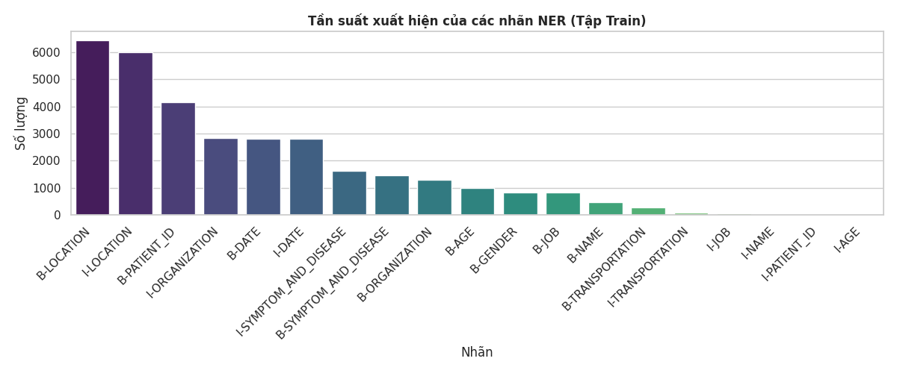
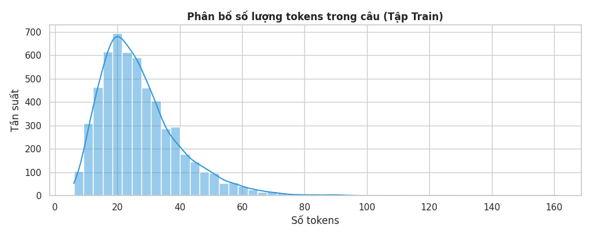
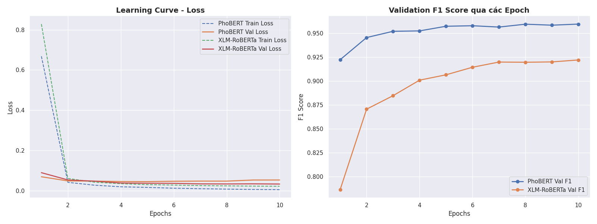
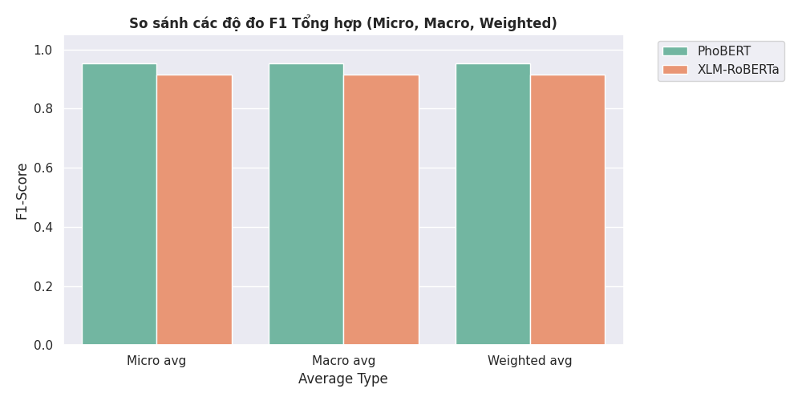
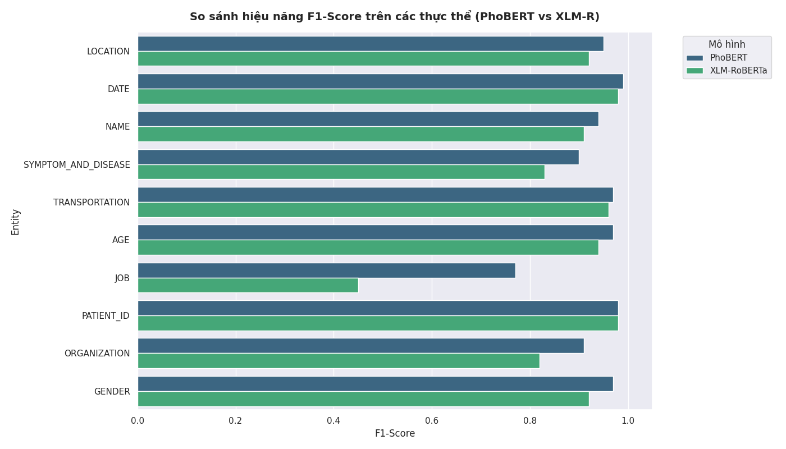
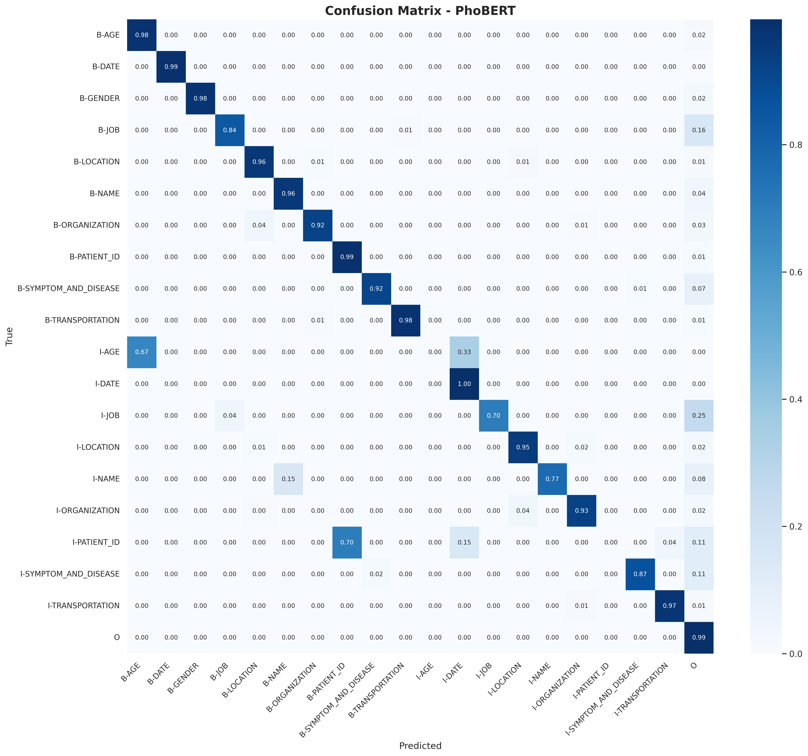
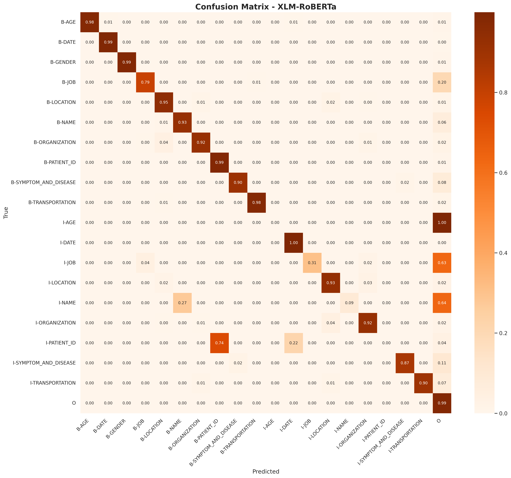
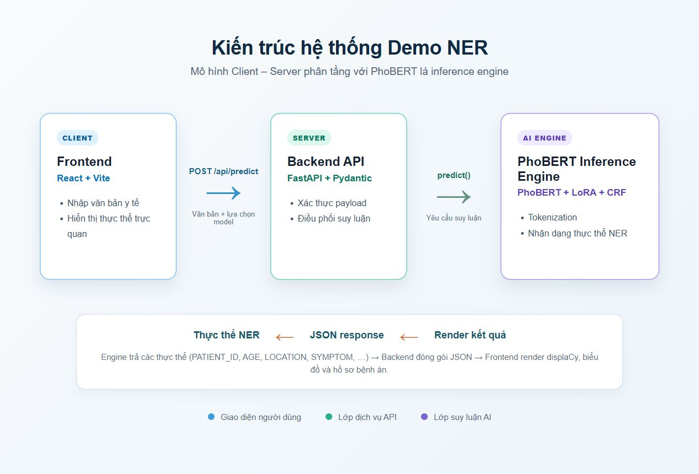
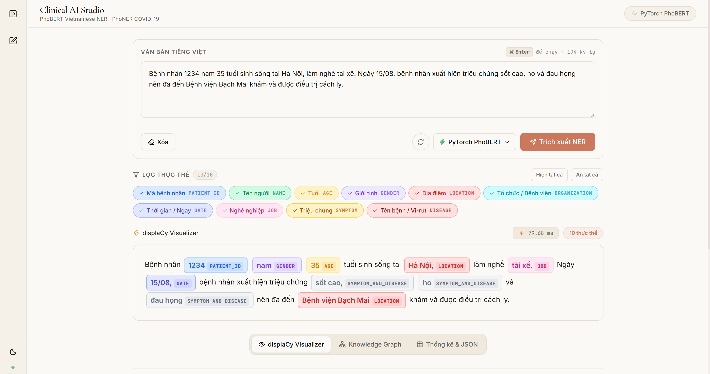

Fine-tuning với LoRA + CRF trên bộ dữ liệu PhoNER_COVID19
Trường Đại học Công nghệ — Đại học Quốc gia Hà Nội (UET — VNU)
Named Entity Recognition (NER) là bài toán Sequence Labeling nhằm phát hiện và phân loại các thực thể định danh trong văn bản y tế (Tên, Tuổi, Địa điểm, Bệnh viện, Triệu chứng, v.v.).
phobert-base-v2Cả hai dựa trên Transformer encoder (Vaswani et al., 2017): cơ chế Self-Attention cho phép mỗi token "nhìn" toàn bộ câu, học biểu diễn ngữ cảnh sâu. BERT (Devlin et al., 2019): Pre-train bằng Masked Language Modeling (MLM).
r=16, alpha=32query, key, value, denseI-LOC ≠ sau B-PER| Thực thể | Ý nghĩa | Ví dụ |
|---|---|---|
| PATIENT_ID | Mã bệnh nhân | BN 1234 |
| NAME | Tên người | Nguyễn Văn A |
| AGE | Tuổi | 35 tuổi |
| GENDER | Giới tính | nam, nữ |
| LOCATION | Địa điểm | Hà Nội |
| ORGANIZATION | Tổ chức / Bệnh viện | Bệnh viện Bạch Mai |
| DATE | Thời gian | ngày 15/08 |
| JOB | Nghề nghiệp | tài xế |
| SYMPTOM_AND_DISEASE | Triệu chứng & Bệnh | sốt cao, COVID-19 |
| TRANSPORTATION | Phương tiện | chuyến bay VN123 |
Quy ước BIO: B- (Begin),
I- (Inside), O (Outside) → 10 entity × 2 + 1 = 21 nhãn


MAX_LENGTH = 128 → bao phủ > 95% câuNhãn JOB chỉ có ~100 mẫu B-JOB (~1.4%) và ~50 mẫu I-JOB, khiến mô hình khó học đặc trưng và dễ bỏ sót (False Negative).
JOB trong câu huấn luyện.num_augments = 3 câu mới cho mỗi câu gốc.
• Backbone: vinai/phobert-base-v2 (135M params)
• Target modules: query, key, value, dense
• Trainable params: ~2.4M (~1.8% tổng số tham số)
• Backbone: xlm-roberta-base (278M params)
• Target modules: query, value
• Trainable params: ~1.2M (~0.4% tổng số tham số)
| Hyperparameter | PhoBERT | XLM-RoBERTa |
|---|---|---|
| Backbone | vinai/phobert-base-v2 |
xlm-roberta-base |
| LoRA rank (r) / alpha | 16 / 32 | 16 / 32 |
| Epochs | 10 | 10 |
| Batch Size | 16 | 16 |
| Max Sequence Length | 128 | 128 |
| LR (LoRA) | 3e-4 | 1e-4 |
| LR (Classifier) | 1e-3 | 5e-4 |
| LR (CRF) | 2e-3 | 1e-3 |
| Warmup Ratio | 10% | 10% |
| Optimizer | AdamW | AdamW |
| Grad Clipping | max_norm = 1.0 | max_norm = 1.0 |
| Data Augmentation | Entity Swap (JOB, ×3) | Entity Swap (JOB, ×3) |
Tokenization: Subword alignment — chỉ gán nhãn subword đầu tiên, còn lại -100
(ignore).
Loss: Neg. log-likelihood CRF (token_mean).
Best checkpoint: theo Val F1 cao nhất.


Kết luận: PhoBERT vượt trội XLM-R ~4% F1 trên cả Micro, Macro và Weighted avg. Lý do: pre-training chuyên biệt trên corpus tiếng Việt + tokenizer BPE tối ưu cho đặc thù ngôn ngữ.


PhoBERT + LoRA + CRF

XLM-RoBERTa + LoRA + CRF

/api/predict, /api/health
